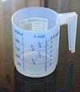

volume

Definition: Volume is a measure of three-dimensional space. It is often quantified numerically using SI derived units (such as the cubic metre and litre) or by various imperial or US customary units (such as the gallon, quart, cubic inch). The definition of length (cubed) is interrelated with volume. The volume of a container is generally understood to be the capacity of the container; i.e., the amount of fluid (gas or liquid) that the container could hold, rather than the amount of space the container itself displaces.
Source: Wikipedia
Wikipedia Page
Wikidata Page